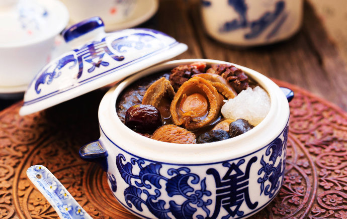

Buddha Jumps Over The Wall

Description
Buddha Jumps Over The Wall Soup is a pot of nutritious Chinese delicacies simmered long and slow until fall apart tender! It's the most nourishing herbal soup you'll ever have for such a simple recipe. Find out how to make a traditional banquet-quality soup in the comfort of your home!
Its origins can be traced back to the Tang Dynasty. Many high-grade ingredients are gathered together in the jars of Shaoxing rice wine for a long time. The procedure of making the traditional Buddha Jumping Over The Wall is very tedious.
Ingredients
- 200 g Lean pork leg
- 1 Pigs Foot
- 200 g Pig's stomach
- 100 g Duck kidney
- 300 g Beef tendons
- A chicken
- A duck
- 200 g pork rib
- 3-5 large scallops
- 100 g ham
- 2 Fresh bamboo shoots
- 100 g Shitake mushrooms
- 4 flowers Hericium
- 10 Jujube
- 300 g Dried Fish maw (soaked in water)
- 3 Dried Abalone (soaked in water)
- 2-3 Dried Sea cucumbers (soaked in water)
- 4 Dried Bird's nests (soaked in water)
- 200 g Quail eggs
- 45 g Ginger
- 10 g Salt
- 1000 g Shaoxing rice wine
- 50 g Soy sauce
- 20 g Rock sugar
- 500 g Stock Soup
- 1 small piece Cinnamon
- 2 small pieces Bay leaf
- 21 small pieces Star anise
Steps
- Put the abalone and fish maw into another pot with the rice wine, some of the stock soup, and light soy sauce. Cook on low for 4-5 hours.
- Add two spoon of cooking oil to the pan, pour the sea cucumber and stir fry for about 1 minute. In another pot, add the sea cucumber, some of the stock soup, and simmer for about another 1-2 hours.
- Steam bird's nest for 30 minutes in a stew cooker.
- Cut the soup ingredients into smaller pieces. Also, score the duck kidney with a knife.
- Allow the raw materials for blanching and remove.
- Under the wok oil, ginger and spices, add the above ingredients to the stir fry.
- Add x3 tablespoons of Shaoxing rice wine, salt, sugar and light soy sauce for seasoning. Add the Stock Soup and boil.
- Place all ingredients into a pot, plus the soup material B covered with lotus leaf, cook on low for about 4 hours